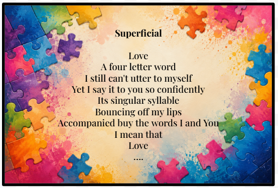
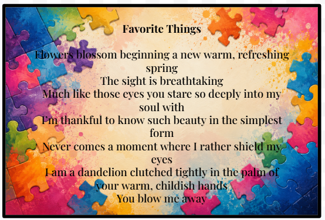
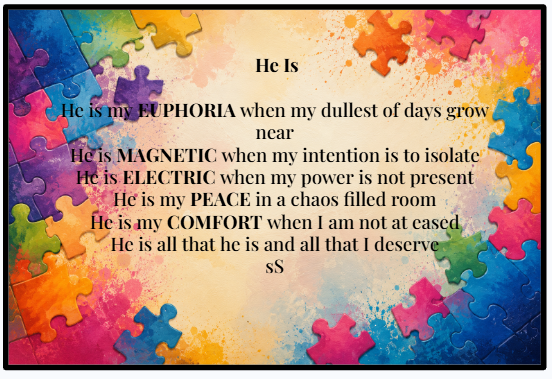

Pieces of My Heart
Here are three of my favorite short poems by me. They are short and sweet and I like to think they tug gently at the heart strings. Enjoy.



Here are three of my favorite short poems by me. They are short and sweet and I like to think they tug gently at the heart strings. Enjoy.


